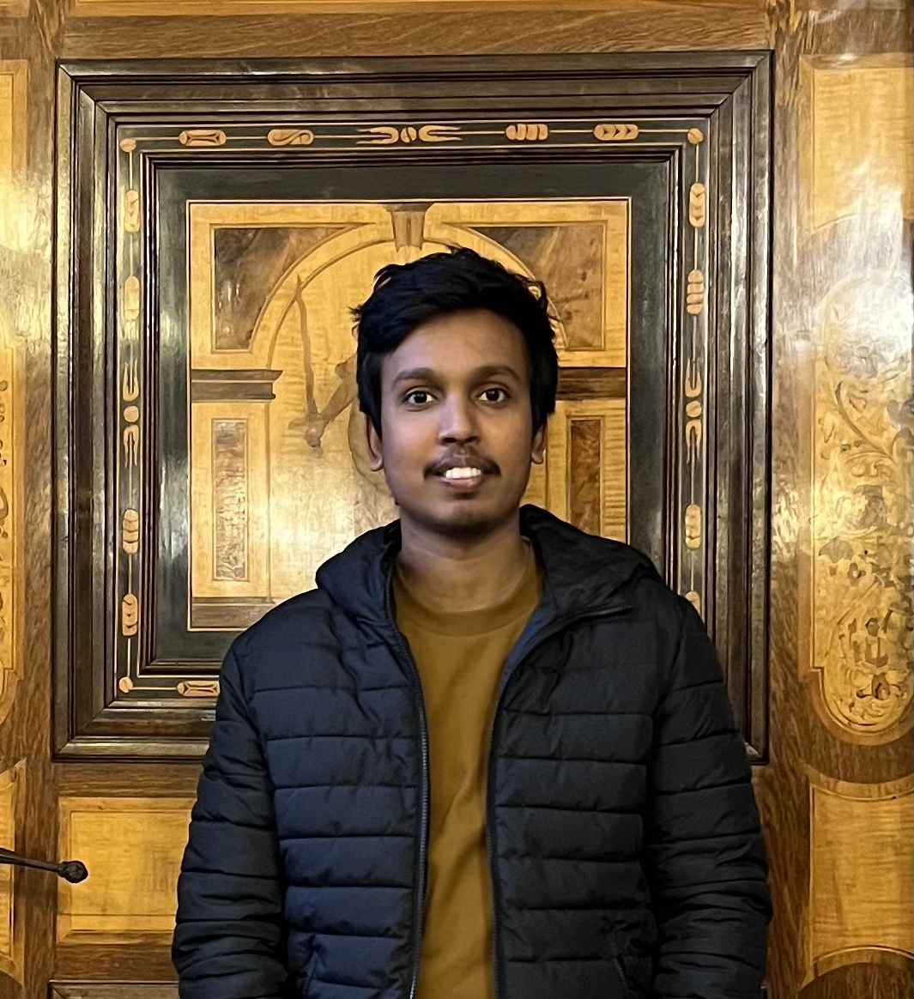
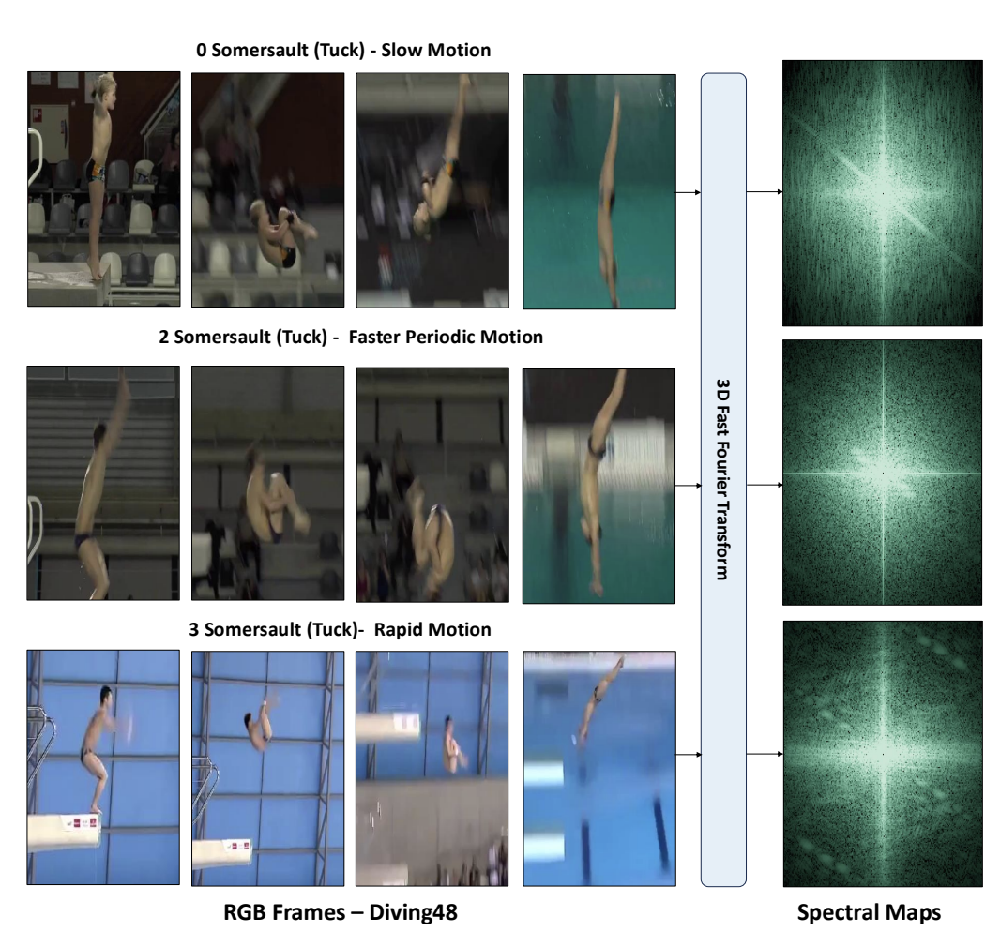
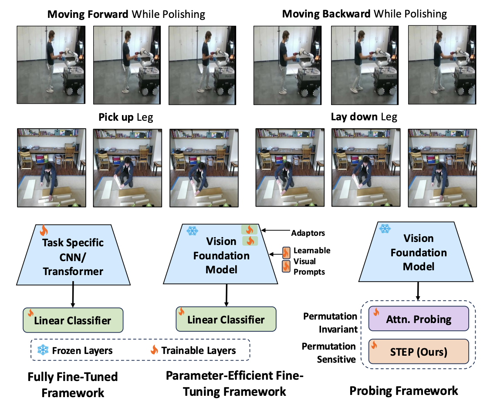
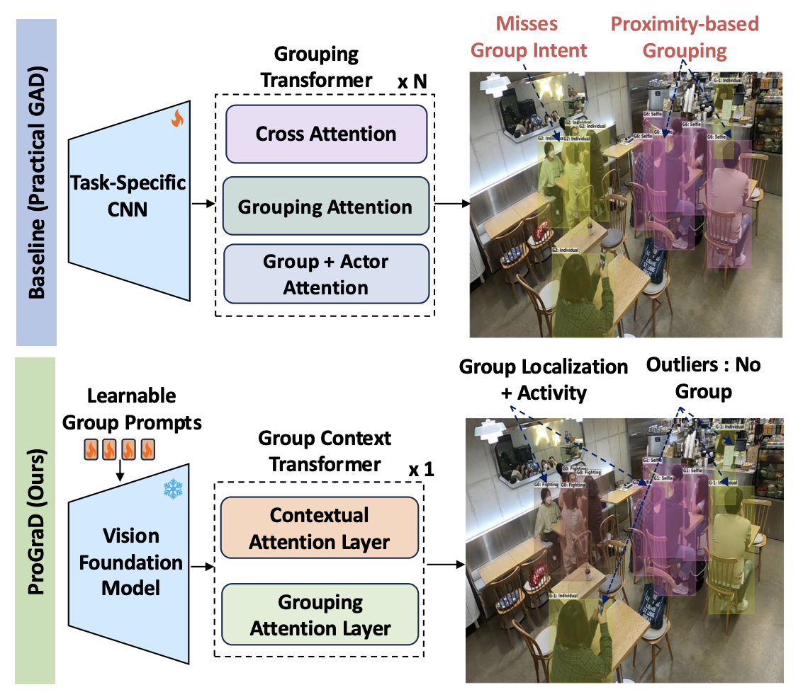
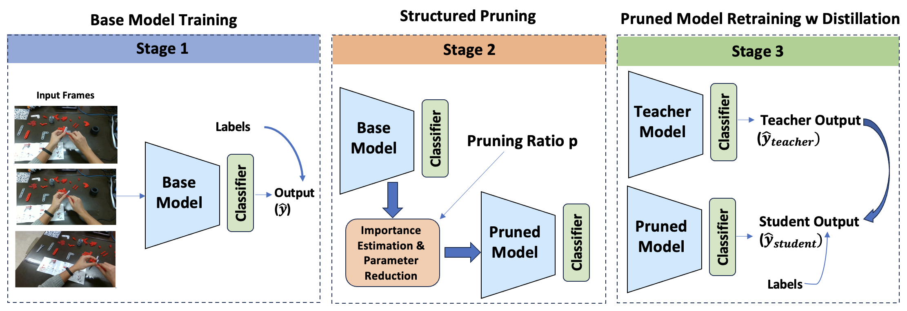
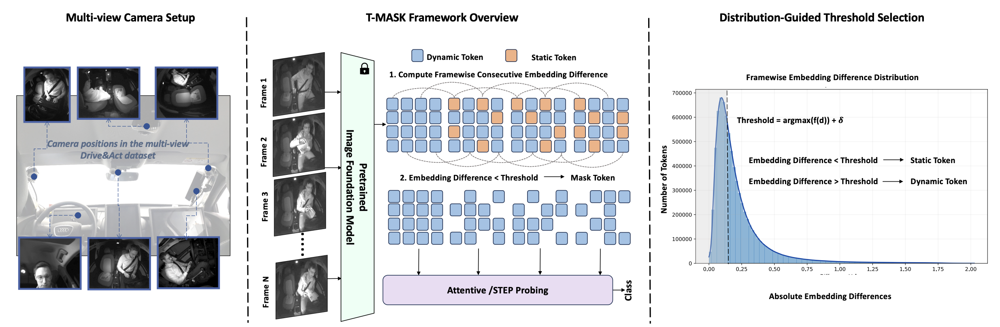

TTPhD Candidate in Computer Science
Stuttgart, Germany
Email Scholar GitHub LinkedIn CV
My research focusses on parameter-efficient fine-tuning techniques to adapt vision foundation models for fine-grained video understanding, with a focus on group activity understanding, cross-view generalization, and human-robot interaction.
Currently, I am a PhD candidate in Computer Science at the University of Stuttgart, advised by Prof. Dr. Alina Roitberg, and a scholar at IMPRS-IS. This fall, I join Amazon as an Applied Scientist Intern in Santa Clara, California. Previously, I worked at Robert Bosch GmbH as a working student and at Johnson Controls as a Lead Controls Engineer.

Frame2Freq: Spectral Adapters for Fine-Grained Video Understanding
@InProceedings{Ponbagavathi_2026_CVPR,
author = {Ponbagavathi, Thinesh Thiyakesan and Seibold, Constantin and Roitberg, Alina},
title = {Frame2Freq: Spectral Adapters for Fine-Grained Video Understanding},
booktitle = {Proceedings of the IEEE/CVF Conference on Computer Vision and Pattern Recognition (CVPR)},
month = {June},
year = {2026},
pages = {24073-24083}
}

Order Matters: On Parameter-Efficient Image-to-Video Probing for Recognizing Nearly Symmetric Actions
@article{ponbagavathi2025order,
title={Order Matters: On Parameter-Efficient Image-to-Video Probing for Recognizing Nearly Symmetric Actions},
author={Ponbagavathi, Thinesh Thiyakesan and Roitberg, Alina},
journal={arXiv preprint arXiv:2503.24298},
year={2025}
}

Structured Relational Reasoning for Group Activity Assessment
@InProceedings{Ponbagavathi_2026_CVPRW,
author = {Ponbagavathi, Thinesh Thiyakesan and Yang, Chengzheng and Roitberg, Alina},
title = {Structured Relational Reasoning for Group Activity Assessment},
booktitle = {Proceedings of the IEEE/CVF Conference on Computer Vision and Pattern Recognition (CVPR) Workshops},
month = {June},
year = {2026},
pages = {8931-8940}
}

PDNet: Exploring Pruning and Distillation for Real-Time Worker Activity Recognition in Industrial Assembly
@conference{visapp26,
author={Malek Baba and Thinesh Thiyakesan Ponbagavathi and Alina Roitberg},
title={PDNet: Exploring Pruning and Distillation for Real-Time Worker Activity Recognition in Industrial Assembly},
booktitle={Proceedings of the 21st International Conference on Computer Vision Theory and Applications - Volume 3: VISAPP},
year={2026},
pages={624-630},
publisher={SciTePress},
organization={INSTICC},
doi={10.5220/0014477200004084},
isbn={978-989-758-804-4},
}

T-MASK: Temporal Masking for Probing Foundation Models across Camera Views in Driver Monitoring
@INPROCEEDINGS{T_MASK_Ponbagavathi,
author={Ponbagavathi, Thinesh Thiyakesan and Peng, Kunyu and Roitberg, Alina},
booktitle={2025 IEEE 28th International Conference on Intelligent Transportation Systems (ITSC)},
title={T-Mask: Temporal Masking for Probing Foundation Models Across Camera Views in Driver Monitoring},
year={2025},
volume={},
number={},
pages={2927-2934},
keywords={Training;Accuracy;Sensitivity;Foundation models;Activity recognition;Benchmark testing;Cameras;Robustness;Monitoring;Videos;Driver Activity Recognition;Cross-view Generalization;Vision Foundation Models},
doi={10.1109/ITSC60802.2025.11423550}}
2024 – Present
Ph.D. Computer Science
University of Stuttgart · IMPRS-IS
Advised by Prof. Dr. Alina Roitberg. Research on parameter-efficient adaptation of vision foundation models for fine-grained video understanding.
2021 – 2023
M.Sc. Electrical Engineering (Smart Systems)
University of Stuttgart
Thesis: 3D-Aware Urban Scene Generation, advised by Prof. Dr. Bin Yang.